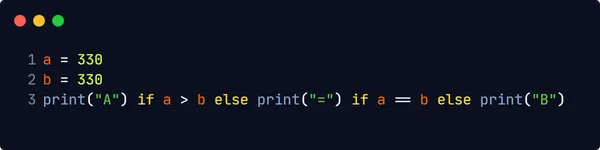

Python acceptă condițiile logice:
a == b
a != b
a < b
a <= b
a > b
a >= b
O declarație "if" este scrisă utilizând cuvântul cheie if.
În acest exemplu folosim două variabile, a și b , care sunt utilizate ca parte a instrucțiunii if pentru a testa dacă b este mai mare decât a. Deoarece a este 33 și b este 200 , știm că 200 este mai mare decât 33 și, prin urmare, imprimăm pe ecran că "b este mai mare decât a".
Puteți avea și afirmații imbricate if:
Cuvântul cheie elif este modul pythons de a spune "dacă condițiile anterioare nu erau
adevărate, atunci încercați această condiție".
În acest exemplu a este egal cu b , deci prima condiție nu este adevărată, dar condiția elif este adevărată, așa că afișăm pe ecran că "a și b sunt egale".
Cuvântul cheie else captează orice nu este prins de condițiile precedente.
În acest exemplu a este mai mare decât b, deci prima condiție nu este adevărată, de asemenea condiția elif nu este adevărată, așa că mergem la condiția else și imprimăm mesajul "a este mai mare decât b".
Puteți avea, de asemenea, mai multe instrucțiuni pe aceeași linie:
Cuvântul cheie and este un operator logic și este utilizat pentru a combina instrucțiuni
condiționale:
Cuvântul cheie or este un operator logic și este utilizat pentru a combina instrucțiuni
condiționale: